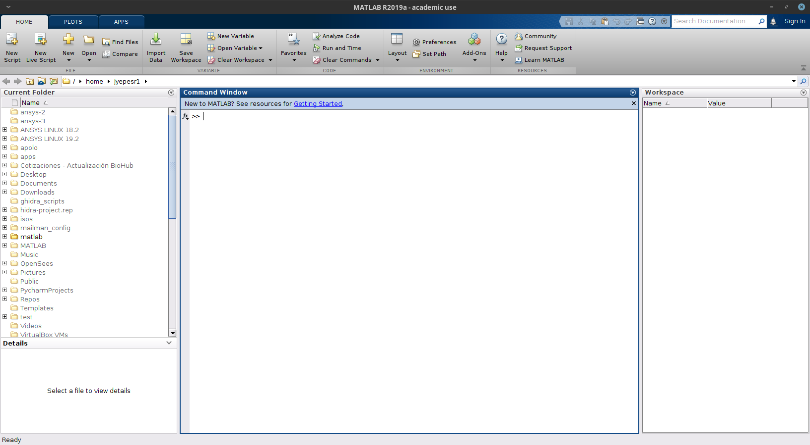
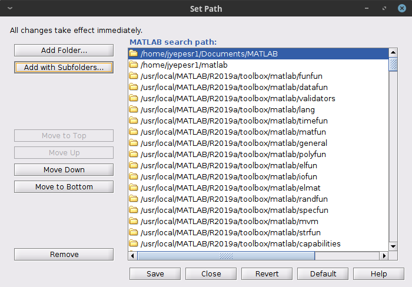
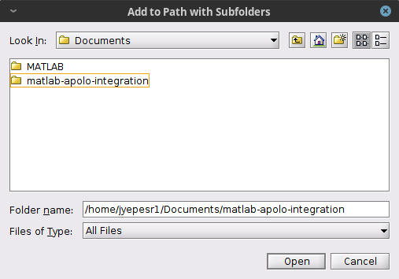
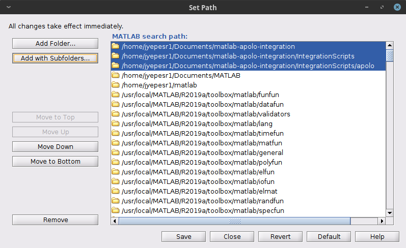
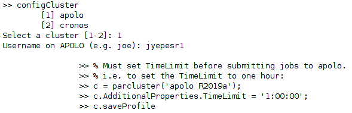
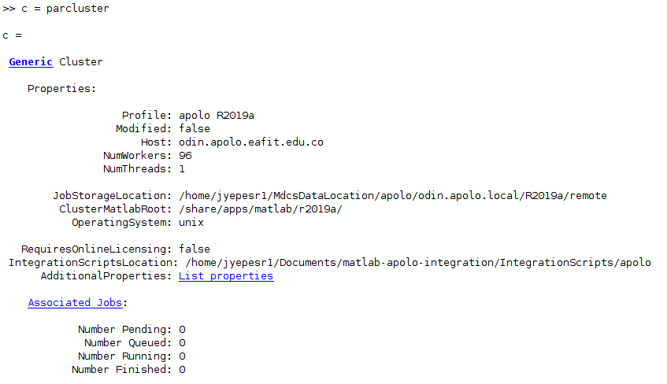
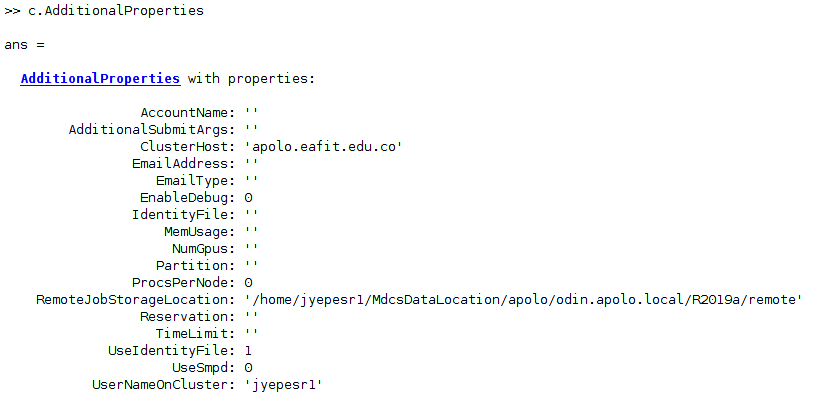
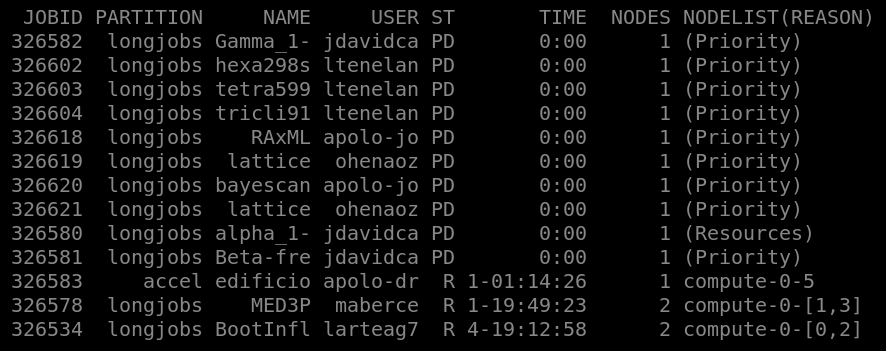

Contents
MDCS using a local MATLAB client
To submit jobs through a local MATLAB client in Apolo II or Cronos using SLURM follow next steps to got the integration:
Integration scripts
Add the MATLAB integration scripts to your MATLAB PATH by placing the integration scripts into a directory in your PC. (
matlab-apolo.zip).e.g.
$HOME/Documents/matlab-integration
Linux
mkdir $HOME/Documents/matlab-integration mv path-to-file/matlab-apolo-R2019a.zip $HOME/matlab-integration/ cd $HOME/Documents/matlab-integration unzip matlab-apolo-R2019a.zip rm matlab-apolo-R2019a.zip
Open your MATLAB client to configure it.
Note
MATLAB client is installed in a system directory, we strongly suggest to open it with admin privileges, it is only necessary the first time to configure it.
Add the integrations scripts to the MATLAB PATH
Press the “Set Path” button
Press the “Add with Subfolders” button and choose the directories where you unzip the integrations scripts (Apolo II and Cronos) and finally press the “Save” button:
$HOME/matlab-integration/EAFIT.nonshared.R2019a



Configuring cluster profiles
Configure MATLAB to run parallel jobs on your cluster by calling
configCluster. It will prompt you for a cluster selection if the user wants to use Apolo or Cronos nodes.Modify the cluster profile through a variable definition
c = parcluster.Set the custom options as you need.

TimeLimit→ (Mandatory) Set a limit on the total run time of the job allocation (more info).e.g.
c.AdditionalProperties.TimeLimit = '3-10:00:00';
AccountName→ Change the default user account on Slurm.e.g.
c.AdditionalProperties.AccountName = 'apolo';
ClusterHost→ Another way to change the cluster hostname to submit jobs.e.g.
c.AdditionalProperties.ClusterHost = 'apolo.eafit.edu.co';
EmailAddress→ Get all job notifications by e-mail.e.g.
c.AdditionalProperties.EmailAddress = 'apolo@eafit.edu.co';
EmailType→ Get only the desired notifications based on sbatch options.e.g.
c.AdditionalProperties.EmailType = 'END,TIME_LIMIT_50';
MemUsage→ Total amount of memory per machine (more info).e.g.
c.AdditionalProperties.MemUsage = '5G';
NumGpus→ Number of GPUs to use in a job.e.g.
c.AdditionalProperties.NumGpus = 2;
Note
The maximum value for
NumGpusis four, also if you select this option you should use the ‘accel’ partition on Apolo II.Partition→ Select the desire partition to submit jobs (by default longjobs partition will be used)e.g.
c.AdditionalProperties.Partition = 'bigmem';
Reservation→ Submit a job into a reservation (more info).e.g.
c.AdditionalProperties.Reservation = 'reservationName';
AdditionalSubmitArgs→ Any valid sbatch parameter (raw) (more info)e.g.
c.AdditionalProperties.AdditionalSubmitArgs = '--no-requeue';
Save the current profile to avoid setting the properties each time.
>> configCluster >> c = parcluster; >> c.AdditionalProperties.TimeLimit = '1:00:00'; >> c.AdditionalProperties.Partition = 'longjobs'; >> c.saveProfile >> % e.g. to set the NumGpus, TimeLimit and Partition >> c = parcluster(); >> c.AdditionalProperties.TimeLimit = '1:00:00'; >> c.AdditionalProperties.Partition = 'accel'; >> c.AdditionalProperties.NumGpus = 2; >> c.saveProfile
Submitting jobs
General steps
Load ‘apolo R2019a’ cluster profile and load the desired properties to submit a job.
>> c = parcluster('apolo R2019a');
Note
There was no necessary to set the additional properties because they have been already set when the profile was saved the first time with
c.saveProfile.
To see the values of the current configuration options, call the specific
AdditionalPropertiesmethod.>> % To view current properties >> c.AdditionalProperties
To clear a value, assign the property an empty value (
'',[], orfalse).>> % Turn off email notifications >> c.AdditionalProperties.EmailAddress = '';
If you have to cancel a job (queued or running) type.
>> j.cancel
Delete a job after results are no longer needed.
>> j.delete
Serial jobs
Use the batch command to submit asynchronous jobs to the cluster. The batch command will return a job object which is used to access the output of the submitted job.
(See the MATLAB documentation for more help on batch.)
function t = serial_example(n) t0 = tic; A = 500; a = zeros(n); for i = 1:n a(i) = max(abs(eig(rand(A)))); end t = toc(t0); end
>> % Get a handle to the cluster >> c = parcluster('apolo R2019a'); >> % Submit job to query where MATLAB is running on the cluster (script) >> j = c.batch(@serial_example, 1, {1000}); >> % Query job for state >> j.State >> % Load results >> j.fetchOutputs{:} >> % Delete the job after results are no longer needed >> j.delete
To retrieve a list of currently running or completed jobs, call
parclusterto retrieve the cluster object. The cluster object stores an array of jobs that were run, are running, or are queued to run. This allows us to fetch the results of completed jobs. Retrieve and view the list of jobs as shown below.>> c = parcluster('apolo R2019a'); >> jobs = c.Jobs
Once we have identified the job we want, we can retrieve the results as we have done previously.
fetchOutputsis used to retrieve function output arguments; if using batch with a script, useloadinstead.Data that has been written to files on the cluster needs be retrieved directly from the file system. To view results of a previously completed job:
>> % Get a handle on job with ID 2 >> j2 = c.Jobs(2); >> j2.fetchOutputs{:}
Note
You can view a list of your jobs, as well as their IDs, using the above
c.Jobscommand.Another example using a MATLAB script.
t0 = tic; A = 500; a = zeros(100); fileID = fopen('/tmp/time.txt','wt'); for i = 1:100 a(i) = max(abs(eig(rand(A)))); end t = toc(t0); fprintf(fileID, '%6.4f\n', t); fclose(fileID);
Job submission
>> % Get a handle to the cluster >> c = parcluster('apolo R2019a'); >> % Submit job to query where MATLAB is running on the cluster (script) >> j = c.batch('serial_example_script'); >> % Query job for state >> j.State >> %Load results into the client workspace >> j.load >> % Delete the job after results are no longer needed >> j.delete
Another example using a MATLAB script that supports GPU.
maxIterations = 500; gridSize = 1000; xlim = [-0.748766713922161, -0.748766707771757]; ylim = [ 0.123640844894862, 0.123640851045266]; % Setup t = tic(); x = gpuArray.linspace( xlim(1), xlim(2), gridSize ); y = gpuArray.linspace( ylim(1), ylim(2), gridSize ); [xGrid,yGrid] = meshgrid( x, y ); z0 = complex( xGrid, yGrid ); count = ones( size(z0), 'gpuArray' ); % Calculate z = z0; for n = 0:maxIterations z = z.*z + z0; inside = abs( z )<=2; count = count + inside; end count = log( count ); % Show count = gather( count ); % Fetch the data back from the GPU naiveGPUTime = toc( t ); fig = gcf; fig = figure('visible', 'off'); fig.Position = [200 200 600 600]; imagesc( x, y, count ); colormap( [jet();flipud( jet() );0 0 0] ); axis off; title( sprintf( '%1.2fsecs (GPU)', naiveGPUTime ) ); saveas(gcf,'/tmp/GPU.png');
Job submission
>> % Get a handle to the cluster >> c = parcluster('apolo R2019a'); >> % Submit job to query where MATLAB is running on the cluster (script) >> j = c.batch('gpu_script'); >> % Query job for state >> j.State
Another example using Simulink via MATLAB.
% Example running a Simulink model. % The Simulink model is called |parsim_test.slx| and it *must be* in % the cluster. % Number of simulations numSims = 10; W = zeros(1,numSims); % Changing to the |parsim_test.slx| path cd ~/tests/simulink % Create an array of |SimulationInput| objects and specify the argument value % for each simulation. The variable |x| is the input variable in the Simulink % model. for x = 1:numSims simIn(x) = Simulink.SimulationInput('parsim_test'); simIn(x) = setBlockParameter(simIn(x), 'parsim_test/Transfer Fcn', 'Denominator', num2str(x)); end % Running the simulations. simOut = parsim(simIn); % The variable |y| is the output variable in the Simulink model. for x = 1:numSims W(1,x) = max(simOut(x).get('y')); end save('~/output_file.mat','W');
parsim_test.slx (Simulink model)Job submission
>> % Get a handle to the cluster >> c = parcluster('apolo remote R2018a'); >> % Submit job to query where MATLAB is running on the cluster (script) >> j = c.batch('parsim_test_script'); >> % Query job for state >> j.State >> % Load data to client workspace >> j.load
Parallel or distributed jobs
Users can also submit parallel or distributed workflows with batch command. Let’s use the following example for a parallel job.
function t = parallel_example(n)
t0 = tic;
A = 500;
a = zeros(n);
parfor i = 1:n
a(i) = max(abs(eig(rand(A))));
end
t = toc(t0);
end
We will use the batch command again, but since we are running a parallel job, we will also specify a MATLAB pool.
>> % Get a handle to the cluster >> c = parcluster('apolo R2019a'); >> % Submit a batch pool job using 4 workers >> j = c.batch(@parallel_example, 1, {1000}, 'Pool', 4); >> % View current job status >> j.State >> % Fetch the results after a finished state is retrieved >> j.fetchOutputs{:} ans = 41.7692
The job ran in 41.7692 seconds using 4 workers.
Note
Note that these jobs will always request N+1 CPU cores, since one worker is required to manage the batch job and pool of workers. For example, a job that needs eight workers will consume nine CPU cores.
Note
For some applications, there will be a diminishing return when allocating too many workers, as the overhead may exceed computation time (communication).
We will run the same simulation, but increase the pool size. This time, to retrieve the results later, we will keep track of the job ID.
>> % Get a handle to the cluster >> c = parcluster('apolo R2019a'); >> % Submit a batch pool job using 8 workers >> j = c.batch(@parallel_example, 1, {1000}, ‘Pool’, 8); >> % Get the job ID >> id = j.ID Id = 4 >> % Clear workspace, as though we quit MATLAB >> clear
Once we have a handle to the cluster, we will call the
findJobmethod to search for the job with the specified job ID.>> % Get a handle to the cluster >> c = parcluster('apolo R2019a'); >> % Find the old job >> j = c.findJob('ID', 4); >> % Retrieve the state of the job >> j.State ans finished >> % Fetch the results >> j.fetchOutputs{:} ans = 22.2082
The job now runs 22.2082 seconds using 8 workers. Run code with different number of workers to determine the ideal number to use.
Another example using a parallel script.
n = 1000; t0 = tic; A = 500; a = zeros(n); fileID = fopen('/tmp/time.txt','wt'); parfor i = 1:n a(i) = max(abs(eig(rand(A)))); end t = toc(t0); fprintf(fileID, '%6.4f\n', t); fclose(fileID);
>> % Get a handle to the cluster >> c = parcluster('apolo R2019a'); >> % Submit job to query where MATLAB is running on the cluster (script) >> j = c.batch('parallel_example_script', 'Pool', 8); >> % Query job for state >> j.State >> %Load results >> j.load >> % Delete the job after results are no longer needed >> j.delete
Debugging
If a serial job produces an error, we can call the
getDebugLogmethod to view the error log file using j.Tasks(1). Additionally when submitting independent jobs, with multiple tasks, you will have to specify the task number.>> % If necessary, retrieve output/error log file >> j.Parent.getDebugLog(j.Tasks(1))
For pool jobs, do not diference into the job object.
>> % If necessary, retrieve output/error log file >> j.Parent.getDebugLog(j) >> % or >> c.getDebugLog(j)
To get information about the job in SLURM, we can consult the scheduler ID by calling
schedID.>> schedID(j) ans = 25539
MDCS using cluster’s MATLAB client
Submitting jobs from within MATLAB client on the cluster
General steps
Connect to Apolo II or Cronos via SSH.
# Without graphical user interface ssh username@[cronos,apolo].eafit.edu.co # or with graphical user interface ssh -X username@[cronos,apolo].eafit.edu.co
Load MATLAB modufile.
module load matlab/r2019a
Run MATLAB client
matlab
First time, you have to define the cluster profile running the following command.
>> configCluster >> % Must set TimeLimit before submitting jobs to >> % the cluster. >> % i.e. to set the TimeLimit >> c = parcluster('cluster R2019a'); >> c.AdditionalProperties.TimeLimit = '1:00:00'; >> c.saveProfile
Warning
The
configClustercommand should be run only the very first time you configure your MATLAB client. It is NOT necessary to run the command each time.Load the cluster profile to submit a job (MATLAB GUI or command line).
>> % Must set TimeLimit before submitting jobs to Apolo II or >> % Cronos cluster >> c = parcluster() c = Generic Cluster Properties: Profile: cluster R2019a Modified: false Host: apolo.eafit.edu.co NumWorkers: 96 NumThreads: 1 JobStorageLocation: /home/<user>/MdcsDataLocation/cluster/R2019a/local ClusterMatlabRoot: /share/common-apps/matlab/r2019a OperatingSystem: unix RequiresOnlineLicensing: false IntegrationScriptsLocation: /share/common-apps/matlab/r2019a/toolbox/local/cluster.local/IntegrationScripts/cluster AdditionalProperties: List properties Associated Jobs: Number Pending: 0 Number Queued: 0 Number Running: 0 Number Finished: 0
To see the values of the current configuration options, call the specific
AdditionalPropertiesmethod.>> % To view current properties >> c.AdditionalProperties ans = AdditionalProperties with properties: AccountName: '' AdditionalSubmitArgs: '' EmailAddress: '' EmailType: '' EnableDebug: 0 MemUsage: '' Partition: '' ProcsPerNode: 0 Reservation: '' TimeLimit: '' UseSmpd: 0
To clear a value, assign the property an empty value (
'',[], orfalse).>> % Turn off email notifications >> c.AdditionalProperties.EmailAddress = '';
Submitting jobs
Note
Users can submit serial, parallel or distributed jobs with batch command as the previous examples.
Submitting jobs directly through SLURM
MDCS jobs could be submitted directly from the Unix command line through SLURM.
For this, in addition to the MATLAB source, one needs to prepare a MATLAB submission script with the job specifications.
An example is shown below:
%========================================================== % MATLAB job submission script: matlab_batch.m %========================================================== workers = str2num(getenv('SLURM_NTASKS')); c = parcluster('apolo'); c.AdditionalProperties.TimeLimit = '1:00:00'; c.AdditionalProperties.Partition = 'longjobs'; j = c.batch(@parallel_example_slurm, 1, {1000}, 'pool', workers); exit;
function t = parallel_example_slurm(n) t0 = tic; A = 500; a = zeros(n); parfor i = 1:n a(i) = max(abs(eig(rand(A)))); end t = toc(t0); save prueba.txt t -ascii end
It is submitted to the queue with help of the following SLURM batch-job submission script:
#!/bin/bash #SBATCH -J test_matlab #SBATCH -o test_matlab-%j.out #SBATCH -e test_matlab-%j.err #SBATCH -p longjobs #SBATCH -n 8 #SBATCH -t 20:00 module load matlab/r2018a matlab -nosplash -nodesktop -r "matlab_batch"
Job is submitted as usual with:
sbatch matlab.slurmNote
This scheme dispatches 2 jobs - one serial that spawns the actual MDCS parallel jobs, and another, the actual parallel job.
Once submitted, the job can be monitored and managed directly through SLURM
squeuecommand output
After the job completes, one can fetch results and delete job object from within MATLAB client on the cluster. If program writes directly to disk fetching is not necessary.
>> c = parcluster('apolo'); >> jobs = c.Jobs >> j = c.Jobs(7); >> j.fetchOutputs{:}; >> j.delete;
MATLAB directly on the cluster
Next steps describes how to use MATLAB and its toolboxes without MDCS (workers) toolbox, but this way has next pros and cons.
Pros
No workers limitations
Cons
No distributed jobs (Only parallel or serial jobs)
Unattended job
To run unattended jobs on the cluster follow next steps:
Connect to Apolo II or Cronos via SSH.
ssh username@cronos.eafit.edu.coEnter to the matlab directory project.
cd ~/test/matlab/slurm
Create a SLURM batch-job submission script
#!/bin/bash #SBATCH -J test_matlab #SBATCH -o test_matlab-%j.out #SBATCH -e test_matlab-%j.err #SBATCH -p bigmem #SBATCH -n 8 #SBATCH -t 20:00 module load matlab/r2018a matlab -nosplash -nodesktop < parallel_example_unattended.m
p = parpool(str2num(getenv('SLURM_NTASKS'))); t0 = tic; A = 500; a = zeros(1000); parfor i = 1:1000 a(i) = max(abs(eig(rand(A)))); end t = toc(t0) exit
Submit the job.
sbatch slurm.sh
Check the
stdoutfile (test_matlab_xxxx.out).< M A T L A B (R) > Copyright 1984-2019 The MathWorks, Inc. R2019a Update 3 (9.6.0.1135713) 64-bit (glnxa64) June 5, 2019 To get started, type doc. For product information, visit www.mathworks.com. >> Starting parallel pool (parpool) using the 'local' profile ... connected to 8 workers. t = 22.5327
Interactive job (No GUI)
If it is necessary the user can run interactive jobs following next steps:
Connect to Apolo II or Cronos via SSH.
ssh username@apolo.eafit.edu.coSubmit a interactive request to the resource manager
srun -N 1 --ntasks-per-node=2 -t 20:00 -p debug --pty bash # If resources are available you get immediately a shell in a slave node # e.g. compute-0-6 module load matlab/r2019a matlab
< M A T L A B (R) > Copyright 1984-2019 The MathWorks, Inc. R2019a Update 3 (9.6.0.1135713) 64-bit (glnxa64) June 5, 2019 To get started, type doc. For product information, visit www.mathworks.com. >> p = parpool(str2num(getenv('SLURM_NTASKS'))); Starting parallel pool (parpool) using the 'local' profile ... >> p.NumWorkers ans = 2
Note
At this point you have an interactive MATLAB session through the resource manager (SLURM), giving you the possibility to test and check different MATLAB features.
To finish this job, you have to close the MATLAB session and then the bash session granted in the slave node.
References
“Portions of our documentation contain content originally created by Harvard FAS Research Computing and adapted by us under the Creative Commons Attribution-NonCommercial 4.0 International License. More information: https://rc.fas.harvard.edu/about/attribution/”